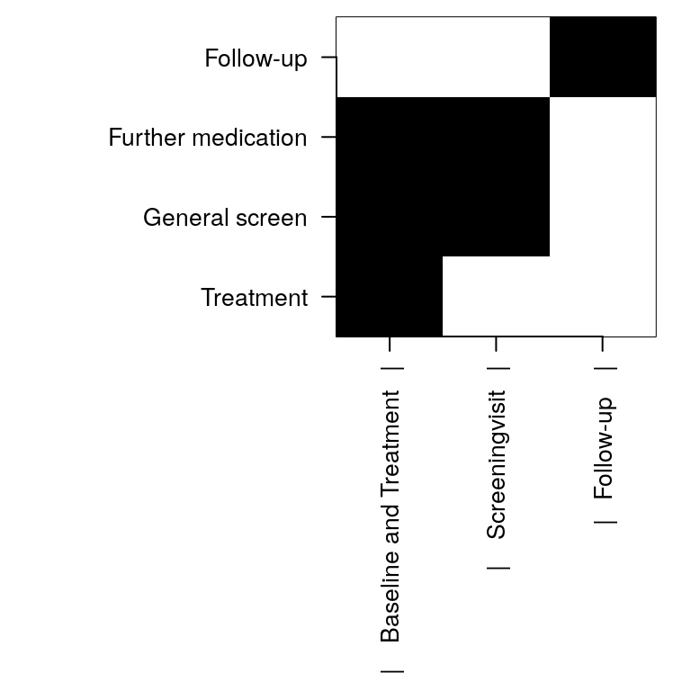
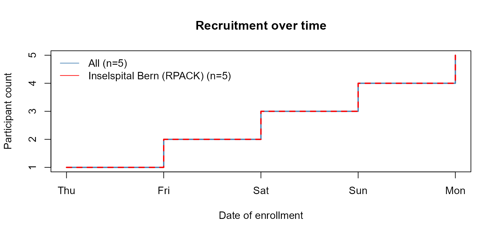

secuTrialR - a walkthrough
Patrick R. Wright, Milica Markovic, Alan Haynes
2020-03-06
secuTrialR-package-vignette.RmdIntroduction
“If I had just five minutes to chop down a tree I would spend the first two and a half minutes sharpening my axe.”
This R package provides functions for handling data from the clinical data management system (CDMS) . The most important components are related to reading data exports from secuTrial into R. In brief, the package aims to enable swift execution of repetitive tasks in order to allow spending more time on the unique aspects of a dataset. It is developed and maintained by the Swiss Clinical Trial Organisation ().
This vignette will teach you how to use the secuTrialR package and you will likely learn quite a bit about secuTrial exports in general along the way.
Installing
Let’s get started by installing the package straight from and then loading it. For this you will need to have devtools installed. We are planning to add secuTrialR to CRAN but we are not there yet.
The CTU05 dataset
Before we continue with the functionalities let’s briefly talk about the test data which is delivered as a part of the package. We refer to it as the CTU05 (clinical trial unit project 05) data. This dataset has been fabricated for demonstration purposes only and is not real clinical data. Principally it is made up of eight forms. These are called “surgeries”, “baseline”, “outcome”, “treatment”, “allmedi”, “studyterminat”, “ae” and “sae”. You will see these names again later when the data has been read into R. The project setup includes most data types implementable in secuTrial. It is, however, not exhaustive. Since the data is delivered with the installation of the secuTrialR package we can point to it via the system.file() function.
ctu05_data_location <- system.file("extdata", "sT_exports", "export_options",
"s_export_CSV-xls_CTU05_20191003-144349_all_info.zip",
package = "secuTrialR")If you work on your own datasets you can specify a path as a regular character string without using system.file().
secuTrial export options
Prior to reading your data into R you need to export it with the secuTrial ExportSearchTool. We suggest exporting non-rectangular, zipped, English data with reference values stored in a separate table including Add-IDs, centre information, form status, project setup and without duplicated meta data. Furthermore, it is important to use “CSV format”/“CSV format for MS Excel” and suggested to select UTF-8 encoding. Most of these options are truly optional and reading your data should work even with differences from the above specifications.
Reading a secuTrial data export into R
There is one principle function to read your data (i.e. read_secuTrial()). Below you can see it in action with the CTU05 dataset.
If the “Read export successfully.” message appears your data was correctly read.
The secuTrialdata object
If you inspect the class() of ctu05_data you will find that it is a secuTrialdata object.
Really this is only a list containing all the information from your secuTrial export.
The data tables in the secuTrialdata object
We have implemented a custom variation of the print() function for secuTrialdata objects.
print(ctu05_data)
#> secuTrial data imported from:
#> /tmp/RtmpvxyLSp/temp_libpath546f94bc29/secuTrialR/extdata/sT_exports/
#> export_options/s_export_CSV-xls_CTU05_20191003-144349_all_info.zip
#> table nrow ncol meta original_name
#> vp 4 12 TRUE vp.xls
#> vpfs 8 2 TRUE vpfs.xls
#> fs 8 8 TRUE fs.xls
#> qs 29 8 TRUE qs.xls
#> is 85 9 TRUE is.xls
#> ctr 3 3 TRUE ctr.xls
#> cn 11 15 TRUE cn.xls
#> atcn 0 9 TRUE atcn.xls
#> atcvp 0 16 TRUE atcvp.xls
#> qac 0 12 TRUE qac.xls
#> cts 0 10 TRUE cts.xls
#> miv 0 10 TRUE miv.xls
#> atmiv 0 15 FALSE atmiv.xls
#> baseline 17 107 FALSE baseline.xls
#> atbaseline 0 79 FALSE atbaseline.xls
#> outcome 13 48 FALSE outcome.xls
#> atoutcome 5 47 FALSE atoutcome.xls
#> treatment 11 44 FALSE treatment.xls
#> attreatment 0 45 FALSE attreatment.xls
#> allmedi 17 47 FALSE allmedi.xls
#> atallmedi 2 47 FALSE atallmedi.xls
#> studyterminat 10 41 FALSE studyterminat.xls
#> atstudyterminat 1 39 FALSE atstudyterminat.xls
#> ae 1 66 FALSE ae.xls
#> atae 0 58 FALSE atae.xls
#> sae 2 64 FALSE sae.xls
#> atsae 0 57 FALSE atsae.xls
#> esurgeries 18 11 FALSE esurgeries.xls
#> atesurgeries 0 9 FALSE atesurgeries.xls
#> cl 205 3 TRUE cl.xls
#> atae1 0 20 FALSE atae1.xlsIt shows you where the export archive of your secuTrialdata object is located, tells you which data tables (i.e. table) it contains, what the source files (i.e. original_name) are and specifies each table’s dimensions (i.e. ncol, nrow).
By now you have possibly realized that all the forms specified earlier (i.e. “surgeries”, “baseline”, “outcome”, “treatment”, “allmedi”, “studyterminat”, “ae” and “sae”) are present, but also that there are many tables do not correspond to the previously introduced forms.
The majority of the unrecognizable tables are tagged as TRUE in the meta column. This means that they are metadata tables. Their names and data structures are fixed in secuTrial exports. In the following we will briefly explain which information the most relevant meta tables contain.
-
vp- visitplan definition -
vpfs- visitplan form linkage -
fs- forms information -
qs- questions -
is- items i.e. variable definitions -
ctr- centre information -
cn- casenodes i.e. table of entered study participants -
cl- information how the data in the variables is coded
Furthermore, there is a set of tables whose names start with “at”. These are audit trail tables. They are only relevant if you need to investigate changes in the data over time. For example certain values may be corrected (i.e. changed) due to findings during monitoring visits at study centres. Last but not least you may have also realized that the “surgeries” table is called esurgeries. This is because it is a so-called repetition form. Repetition forms are labelled with a leading “e” and are implemented as subforms in other forms. In this case, esurgeries is a subform in baseline and the linkage is defined by the mnpdocid column in both tables. If this sounds cryptic to you we suggest you talk so someone who has implemented a database in secuTrial and let them explain it with a specific example. It is pretty straight forward when you look at a concrete implementation.
Accessing the tables and values
Since the secuTrialdata object is a list and the data tables within this list are data.frames you can simply access the tables using $. Let’s say you would like to have a look at the placebo to verum ratio in your treatment data or what types of other medication were entered in allmedi.
Data transformations
During the loading process, coded categorical data is transformed. For example the gender variable in the baseline form is categorical. The raw data is accessible via gender and the transformed version of the data is added during the reading process and becomes accessible via gender.factor. Thus, data is not overwritten but added with the .factor extension. If there are issues during factorization a warning() will inform you of this.
# raw gender data
ctu05_data$baseline$gender
#> [1] 1 NA NA 2 1 2 1 NA NA 1 2 NA NA 1 2 2 NA
#> attr(,"label")
#> [1] "Gender"
# transformed gender data
ctu05_data$baseline$gender.factor
#> [1] male <NA> <NA> female male female male <NA> <NA> male
#> [11] female <NA> <NA> male female female <NA>
#> attr(,"label")
#> [1] Gender
#> Levels: male female
# raw more meds
ctu05_data$allmedi$no_more_meds
#> [1] 1 1 0 1 1 1 0 0 0 1 0 0 1 1 1 1 0
#> attr(,"label")
#> [1] "No further medication"
# transformed more meds
ctu05_data$allmedi$no_more_meds.factor
#> [1] yes yes no yes yes yes no no no yes no no yes yes yes yes no
#> attr(,"label")
#> [1] No further medication
#> Levels: no yesNote that descriptive labels have also been automatically added to the data.
label(ctu05_data$allmedi$no_more_meds.factor)
#> [1] "No further medication"
label(ctu05_data$baseline$gender.factor)
#> [1] "Gender"
label(ctu05_data$esurgeries$surgery_organ.factor)
#> [1] "Organ"Datetime data is also transformed and similarly to the factorization process the names are concatenated with .date or .datetime.
# raw
ctu05_data$baseline$visit_date
#> [1] 20190401 20190402 20190403 20190402 20190403 20190404 20190405
#> [8] 20190406 20190407 20190411 20190412 20190413 20190414 20190413
#> [15] 20190414 20190415 20180501
#> attr(,"label")
#> [1] "Date of visit"
# processed
ctu05_data$baseline$visit_date.date
#> [1] "2019-04-01" "2019-04-02" "2019-04-03" "2019-04-02" "2019-04-03"
#> [6] "2019-04-04" "2019-04-05" "2019-04-06" "2019-04-07" "2019-04-11"
#> [11] "2019-04-12" "2019-04-13" "2019-04-14" "2019-04-13" "2019-04-14"
#> [16] "2019-04-15" "2018-05-01"
# raw only head
head(ctu05_data$baseline$hiv_date)
#> [1] 201903052356 NA NA NA NA
#> [6] NA
# processed only head
head(ctu05_data$baseline$hiv_date.datetime)
#> [1] "2019-03-05 23:56:00 CET" NA
#> [3] NA NA
#> [5] NA NA
# classes
class(ctu05_data$baseline$visit_date)
#> [1] "integer"
class(ctu05_data$baseline$visit_date.date)
#> [1] "Date"
class(ctu05_data$baseline$hiv_date)
#> [1] "numeric"
class(ctu05_data$baseline$hiv_date.datetime)
#> [1] "POSIXct" "POSIXt"Depending on the setup, incomplete dates can be valid entries in a secuTrial database. Thus they will also occasionally appear in your exports. The datetime conversion does not work in these cases and NAs are created. If this happens, secuTrialR will warn you accordingly and you should have a closer look into the affected datetime variables and whether you would like to perform so-called date imputation.
Export options
The secuTrialdata object also contains information on the export options.
ctu05_data$export_options
#> secuTrial version: 5.5.1.10
#> Time of export on server: 03.10.2019 - 14:43:49 (CEST)
#> Project version: (20.06.2019 - 11:22:04 (CEST))
#> Exported with short names
#> File extension: xls
#> Seperator: ' '
#> 32 files exported
#> including 13 metadata tables
#> Reference values exported - factorize possible
#> Metadata tables:
#> type exportname available
#> forms fs TRUE
#> casenodes cn TRUE
#> centres ctr TRUE
#> items is TRUE
#> questions qs TRUE
#> queries qac TRUE
#> visitplan vp TRUE
#> visitplanforms vpfs TRUE
#> atcasenodes atcn TRUE
#> atcasevisitplans atcvp TRUE
#> comments cts TRUE
#> miv miv TRUE
#> cl cl TRUEexport_options itself is a list. If you are interested in more information than is printed you can also access it. Let’s assume you would like to know the project_name and encoding.
ctu05_data$export_options$project_name
#> [1] "secuTrialR example CDMA"
ctu05_data$export_options$encoding
#> [1] "UTF-8"Much more information is stored in the elements of export_options. The names of the elements should be descriptive enough to infer the contents.
names(ctu05_data$export_options)
#> [1] "sep" "date_format" "datetime_format"
#> [4] "date_format_meta" "na.strings" "short_names"
#> [7] "is_zip" "is_rectangular" "audit_trail"
#> [10] "column_names" "lang_not_supported" "dict_items"
#> [13] "refvals_separate" "add_id" "lab_id"
#> [16] "meta_names" "meta_available" "duplicate_meta"
#> [19] "all_files" "data_files" "data_names"
#> [22] "file_end" "extension" "data_dir"
#> [25] "secuTrial_version" "project_version" "project_name"
#> [28] "format_info" "time_of_export" "encoding"
#> [31] "form_status" "centre_info" "hidden_fields"
#> [34] "proj_setup" "factorized" "dated"
#> [37] "labelled"
Generic functions for secuTrialdata objects
Now that you understand the secuTrialdata object we will show you some generic functions you can use on objects of this class.
Show the study participants
First off you may be interested in a table of participants.
get_participants(ctu05_data)
#> mnppid mnpaid mnpctrid mnpctrname
#> 1 1204 RPACK-CBE-001 462 Charité Berlin (RPACK)
#> 2 1205 RPACK-CBE-002 462 Charité Berlin (RPACK)
#> 3 1206 RPACK-CBE-003 462 Charité Berlin (RPACK)
#> 4 1207 RPACK-CBE-004 462 Charité Berlin (RPACK)
#> 5 1208 RPACK-CBE-005 462 Charité Berlin (RPACK)
#> 6 1209 RPACK-INS-011 461 Inselspital Bern (RPACK)
#> 7 1210 RPACK-INS-012 461 Inselspital Bern (RPACK)
#> 8 1211 RPACK-INS-013 461 Inselspital Bern (RPACK)
#> 9 1212 RPACK-INS-014 461 Inselspital Bern (RPACK)
#> 10 1213 RPACK-INS-015 461 Inselspital Bern (RPACK)
#> 11 1214 RPACK-USB-123 441 Universitätsspital Basel (RPACK)Please note that the mnpaid column in this table corresponds to the pat_id column in other tables.
Recruitment over time
You can extract information about participant recruitment per centre and year by applying annual_recruitment() on a secuTrialdata object.
annual_recruitment(ctu05_data)
#> Center Total 2018 2019
#> 1 All 11 1 10
#> 2 Charité Berlin (RPACK) 5 0 5
#> 3 Inselspital Bern (RPACK) 5 0 5
#> 4 Universitätsspital Basel (RPACK) 1 1 0Since the centre names often have a systematic addition (e.g. (RPACK)) we have enabled the option to remove certain parts of the centre descriptions via regular expressions (i.e. rm_regex argument). In this case the regular expression removes trailing parentheses and everything they enclose.
annual_recruitment(ctu05_data, rm_regex = "\\(.*\\)$")
#> Center Total 2018 2019
#> 1 All 11 1 10
#> 2 Charité Berlin 5 0 5
#> 3 Inselspital Bern 5 0 5
#> 4 Universitätsspital Basel 1 1 0It is also possible to plot the recruitment over time.

Visit plan visualization
secuTrialR can provide a depiction of the visit structure, although only where the visit plan is fixed.

Completeness of forms
If you are not sure about how complete the data in your export is, it may be useful to get a quick overview of how well the forms have been filled. The below table shows both absolute and relative numbers for a few forms.
fss <- form_status_summary(ctu05_data)
tail(fss, n = 5)
#> form_name partly_filled completely_filled empty with_warnings
#> 6 baseline 3 14 0 0
#> 7 outcome 1 12 0 0
#> 8 sae 0 2 0 0
#> 9 studyterminat 0 10 0 0
#> 10 treatment 0 11 0 0
#> with_errors partly_filled.percent completely_filled.percent
#> 6 0 0.17647059 0.8235294
#> 7 0 0.07692308 0.9230769
#> 8 0 0.00000000 1.0000000
#> 9 0 0.00000000 1.0000000
#> 10 0 0.00000000 1.0000000
#> empty.percent with_warnings.percent with_errors.percent form_count
#> 6 0 0 0 17
#> 7 0 0 0 13
#> 8 0 0 0 2
#> 9 0 0 0 10
#> 10 0 0 0 11Please note that a form is only complete if all required fields have been filled. Thus, a whole study may have 99% completeness on variable basis while showing 0% completeness on form basis. It is currently not technically possible to assess completeness on variable basis in a generic way. Hence, high completeness on form basis implies high completeness on variable basis but NOT vice versa.
For a more participant id centred statistic you can perform the following.
fsc <- form_status_counts(ctu05_data)
# show the top
head(fsc)
#> pat_id form_name completely_filled partly_filled empty
#> 1 RPACK-CBE-001 baseline 3 0 0
#> 2 RPACK-CBE-002 baseline 1 0 0
#> 3 RPACK-CBE-003 baseline 1 0 0
#> 4 RPACK-CBE-004 baseline 1 0 0
#> 5 RPACK-CBE-005 baseline 1 2 0
#> 6 RPACK-INS-011 baseline 1 0 0
#> with_warnings with_errors
#> 1 0 0
#> 2 0 0
#> 3 0 0
#> 4 0 0
#> 5 0 0
#> 6 0 0Form linkage
Linkages amongst forms can be explored with the links_secuTrial() function. This relies on the igraph package to create a network. It is possible to interact with the network, e.g. move nodes around in order to read the labels better. The R graphics device ID is returned to the console, but can be ignored. Forms are plotted in deep yellow, variables in light blue.
The output can not be shown within this vignette but you should give it a try. Please note that the linkage plot is likely most useful without the audit trail data in the export.
Sampling random participants
During study monitoring it is common practice to check random participants from a study database. These participants should be retrieved in a reproducible fashion. The below function allows this for a loaded secuTrial data export.
# randomly retrieve at least 25 percent of participants recorded after March 18th 2019
# from the centres "Inselspital Bern" and "Charité Berlin"
return_random_participants(ctu05_data,
percent = 0.25,
seed = 1337,
date = "2019-03-18",
centres = c("Inselspital Bern (RPACK)",
"Charité Berlin (RPACK)"))
#> $participants
#> mnpaid centre mnpvisstartdate
#> 2 RPACK-INS-012 Inselspital Bern (RPACK) 2019-04-12
#> 4 RPACK-INS-014 Inselspital Bern (RPACK) 2019-04-14
#> 5 RPACK-CBE-005 Charité Berlin (RPACK) 2019-04-05
#> 3 RPACK-CBE-003 Charité Berlin (RPACK) 2019-04-03
#>
#> $rng_config
#> [1] "Mersenne-Twister" "Inversion" "Rejection"Please note that earlier R versions may return different results because there is a different rng_config (i.e. RNGkind()). For this reason we have added the rng_config to the output.
Retrieve score variables
secuTrial allows implementing calculated variables (i.e. scores). Data is not directly entered into these variables but rather calculated automatically. Scores are defined by a set of rules and use the data in other variables as basis. For example the age of a study participant at data entry can be calculated as the difference between the participant’s birthday and the day of data entry.
It is advisable to recalculate or validate score variable data before data analysis. A rule of thumb: The more complex a score is and the more data from different forms is necessary for its calculation the more likely its value should be recalculated. The below function will allow you to detect which variables this concerns.
Finding changes/differences in exports
In ongoing studies it is possible that changes to the secuTrial data entry interface (i.e. the electronic case report forms) are made. Sometimes these changes may call for adjustments in analysis code. It is considered good practice to run diff_secuTrial() on the last export and the current export of a project to at least make yourself aware of potential changes in the setup. If there are differences, the results of this function should be interpreted as a first indicator since they may not cover all alterations. Information is returned on new forms and variables. A detailed list of changes can be produced in the secuTrial FormBuilder with “Compare project setup”.
# load second export from the same project
export_location <- system.file("extdata", "sT_exports", "longnames",
"s_export_CSV-xls_CTU05_long_ref_miss_en_utf8.zip",
package = "secuTrialR")
# read all export data
ctu05_data_new <- read_secuTrial_raw(data_dir = export_location)
# show diff
diff_secuTrial(ctu05_data, ctu05_data_new)
#> $new_forms
#> character(0)
#>
#> $new_variables
#> character(0)
#>
#> $removed_forms
#> character(0)
#>
#> $removed_variables
#> character(0)This list contains only empty entries. Thus, you can conclude that there are no new forms or variables and no forms or variables have been removed.
Conversion to SPSS, STATA, SAS
Given that you are working with R it is unlikely that you need such conversions for yourself. However, collaborators may ask for data which is readily importable into SPSS, STATA or SAS. For this you can use write_secuTrial().
Since this has not been heavily tested or used there may be issues and you might prefer doing this manually with the haven package.
Subsetting secuTrialdata
In some cases it may be useful to subset your secuTrialdata object. For example if you have cohort data and would like to supply a subset of the data for a retrospective study. We have implemented this option with subset_secuTrial(). It will truncate your secuTrialdata object and return a new secuTrialdata object which is a subset of the original data. It is possible to subset by including or excluding specific participant ids or centres.
# initialize some subset identifiers
participants <- c("RPACK-INS-011", "RPACK-INS-014", "RPACK-INS-015")
centres <- c("Inselspital Bern (RPACK)", "Universitätsspital Basel (RPACK)")
# exclude Bern and Basel
ctu05_data_berlin <- subset_secuTrial(ctu05_data, centre = centres, exclude = TRUE)
# exclude Berlin
ctu05_data_bern_basel <- subset_secuTrial(ctu05_data, centre = centres)
# keep only subset of participants
ctu05_data_pids <- subset_secuTrial(ctu05_data, participant = participants)
class(ctu05_data_berlin)
#> [1] "secuTrialdata"
class(ctu05_data_bern_basel)
#> [1] "secuTrialdata"
class(ctu05_data_pids)
#> [1] "secuTrialdata"If you subset based on centres all traces of deleted centres will be removed. If you remove based on participant ids all traces of deleted participants will be removed.
# only Berlin remains
ctu05_data_berlin$ctr
#> mnpctrid mnpctrname mnpcname
#> 1 462 Charité Berlin (RPACK) NA
# all centres remain even though all three participant ids are from Bern
ctu05_data_pids$ctr
#> mnpctrid mnpctrname mnpcname
#> 1 462 Charité Berlin (RPACK) NA
#> 2 461 Inselspital Bern (RPACK) NA
#> 3 441 Universitätsspital Basel (RPACK) NASince the truncated object’s class remains unchanged (i.e. secuTrialdata) you can still use the generic functions on it. Let’s say you would only like to look at the recruitment plot for Bern alone.
# keep only Bern
ctu05_data_bern <- subset_secuTrial(ctu05_data, centre = "Inselspital Bern (RPACK)")
# plot
plot_recruitment(ctu05_data_bern)
… or Bern and Berlin.
# keep only Bern and Berlin
ctu05_data_bern_berlin <- subset_secuTrial(ctu05_data,
centre = c("Inselspital Bern (RPACK)",
"Charité Berlin (RPACK)"))
# plot
plot_recruitment(ctu05_data_bern_berlin)
The as.data.frame function
This vignette has been working with the secuTrialdata object, which is of type list. For some users, working with a list can be tiresome so secuTrialR provides an as.data.frame() method to save the data.frames in the secuTrialdata object to an environment of your choice.
Let’s have a look at the state of your globalenv() before running as.data.frame()…
ls(globalenv())
#> [1] "centres" "ctu05_data"
#> [3] "ctu05_data_berlin" "ctu05_data_bern"
#> [5] "ctu05_data_bern_basel" "ctu05_data_bern_berlin"
#> [7] "ctu05_data_location" "ctu05_data_new"
#> [9] "ctu05_data_pids" "export_location"
#> [11] "fsc" "fss"
#> [13] "participants" "vs"… and afterwards.
ls(globalenv())
#> [1] "ae" "allmedi"
#> [3] "atae" "atae1"
#> [5] "atallmedi" "atbaseline"
#> [7] "atesurgeries" "atmiv"
#> [9] "atoutcome" "atsae"
#> [11] "atstudyterminat" "attreatment"
#> [13] "baseline" "centres"
#> [15] "ctu05_data" "ctu05_data_berlin"
#> [17] "ctu05_data_bern" "ctu05_data_bern_basel"
#> [19] "ctu05_data_bern_berlin" "ctu05_data_location"
#> [21] "ctu05_data_new" "ctu05_data_pids"
#> [23] "esurgeries" "export_location"
#> [25] "fsc" "fss"
#> [27] "outcome" "participants"
#> [29] "sae" "studyterminat"
#> [31] "treatment" "vs"Frequent warning messages
Certain warning messages can occur quite frequently when running read_secuTrial(). Some of them may call for deliberate action and thus it is important to understand them. We briefly mentioned some of them earlier in this document but will now more closely explain how they can be interpreted.
Please note that warning messages may “pile up” depending on the export you are reading. For example this may happen if there are many date variables with incomplete data. This is no reason for concern. We suggest that you read them and interpret them based on the explanations below. We use a_form_name and a_variable_name as place holders in the examples. If in doubt you can always work with the raw data because it is never overwritten.
Dates
The below warning tells you that some data in a date variable could not be converted during the process of date conversion (i.e. dates_secuTrial()). This ususally occurs if incomplete date entries are present. Since the raw data is not overwritten but rather a variable_name.date or variable_name.datetime column are added to the dataset you can specifically see which values could not be converted because the raw data will contain data while the corresponding .date/.datetime entires will be NA. The warning also indicates where to look. The dummy example below indicates to look at the variable a_variable_name in form a_form_name.
#> Warning: In dates_secuTrial.data.frame(tmp, datevars, timevars, dateformat, :
#> Not all dates were converted for
#> variable: 'a_variable_name'
#> in form: 'a_form_name'
#> This is likely due to incomplete date entries.Factors
In some cases secuTrial allows differently coded data to be decoded to the same target value for the same variable. For instance this can happen if hierarchical lookuptables have been implemented in the database. Because this interferes with the factorization (i.e. factorize_secuTrial()) we add the code to the duplicate decoded value and return the below message to make you aware.
If you run into this warning message we suggest running the table() function on the variable in question. This will likely clarify the above explanation.
#> Warning: In factorize_secuTrial.data.frame(curr_form_data, cl = object$cl, :
#> Duplicate values found during factorization of a_variable_nameLabels
Sometimes the labels of variables in a secuTrial database implementation may be changed after release of the database. In these cases all labels (current and previous versions) are added to the label attribute during labelling (i.e. label_secuTrial()) and the below warning is triggered. It indicates which variables in which forms are affected.
#> Warning: In label_secuTrial.secuTrialdata(d) :
#> The labels attribute may be longer than 1 for the following variables and forms.
#> Likely the label was changed from its original state in the secuTrial project setup.
#> variables: a_variable_name
#> forms: a_form_name
A note on mnp* variables
There is a plethora of variables in the tables of secuTrial exports whose names start with mnp. These are metadata variables which are e.g. important to logically link the different tables. Explaining them all is beyond the scope of this vignette. For detailed explanations, please refer to the secuTrial “Export Formats” user manual.
Disclaimer
The descriptions of the secuTrial exports used in this vignette and other secuTrialR documentation correspond to our understanding of them and come with no warranty. For in depth details please refer to the original secuTrial manuals.
The sessionInfo()
sessionInfo()
#> R version 3.6.2 (2019-12-12)
#> Platform: x86_64-pc-linux-gnu (64-bit)
#> Running under: Ubuntu 18.04.4 LTS
#>
#> Matrix products: default
#> BLAS: /usr/lib/x86_64-linux-gnu/blas/libblas.so.3.7.1
#> LAPACK: /usr/lib/x86_64-linux-gnu/lapack/liblapack.so.3.7.1
#>
#> locale:
#> [1] LC_CTYPE=C.UTF-8 LC_NUMERIC=C LC_TIME=C.UTF-8
#> [4] LC_COLLATE=C.UTF-8 LC_MONETARY=C.UTF-8 LC_MESSAGES=C.UTF-8
#> [7] LC_PAPER=C.UTF-8 LC_NAME=C LC_ADDRESS=C
#> [10] LC_TELEPHONE=C LC_MEASUREMENT=C.UTF-8 LC_IDENTIFICATION=C
#>
#> attached base packages:
#> [1] tcltk stats graphics grDevices utils datasets methods
#> [8] base
#>
#> other attached packages:
#> [1] secuTrialR_0.8.7 lubridate_1.7.4 dplyr_0.8.3 tidyr_1.0.0
#> [5] purrr_0.3.3 tibble_2.1.3 stringr_1.4.0 readxl_1.3.1
#> [9] readr_1.3.1 igraph_1.2.4.1 haven_2.2.0
#>
#> loaded via a namespace (and not attached):
#> [1] Rcpp_1.0.3 compiler_3.6.2 pillar_1.4.2 cellranger_1.1.0
#> [5] forcats_0.4.0 tools_3.6.2 zeallot_0.1.0 digest_0.6.22
#> [9] lifecycle_0.1.0 evaluate_0.14 memoise_1.1.0 pkgconfig_2.0.3
#> [13] rlang_0.4.1 rstudioapi_0.10 yaml_2.2.0 pkgdown_1.4.1
#> [17] xfun_0.10 knitr_1.25 desc_1.2.0 fs_1.3.1
#> [21] vctrs_0.2.0 hms_0.5.2 rprojroot_1.3-2 tidyselect_0.2.5
#> [25] tufte_0.5 glue_1.3.1 R6_2.4.0 rmarkdown_2.1
#> [29] magrittr_1.5 backports_1.1.5 htmltools_0.4.0 MASS_7.3-51.5
#> [33] assertthat_0.2.1 stringi_1.4.3 crayon_1.3.4